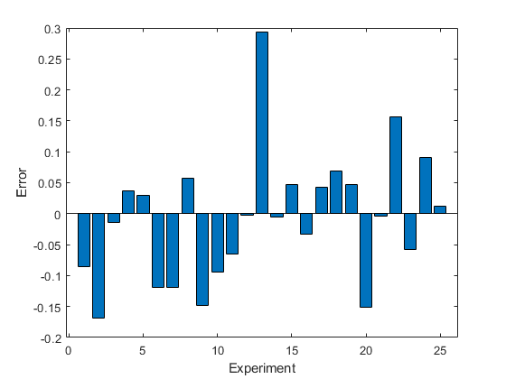

Write Plugin to Add Data to Test Results
This example shows how to create a plugin that adds data to
TestResult objects. The plugin appends the actual and
expected values in an assertion to the Details property of the
TestResult object. To extend the
TestRunner, the plugin overrides select methods of the
matlab.unittest.plugins.TestRunnerPlugin class.
Create Plugin Class
In a file in your current folder, create the custom plugin class
DetailsRecordingPlugin, which inherits from the
TestRunnerPlugin class. For the complete code for
DetailsRecordingPlugin, see DetailsRecordingPlugin Class Definition Summary.
To store the actual and expected values in TestResult
objects, define two constant properties, ActField and
ExpField, within a properties block.
Set the value of ActField to the name of the field of the
Details structure that contains the actual value. Set the
value of ExpField to the name of the field that contains the
expected value.
properties (Constant, Access = private) ActField = 'ActualValue'; ExpField = 'ExpectedValue'; end
Add Fields to Details Property
To add new fields to the Details property of all
TestResult objects belonging to the test session,
override the runSession method of
TestRunnerPlugin in a methods block
with protected access. runSession adds two
empty fields to the Details structure of
TestResult objects and invokes the superclass method to
trigger the entire test run.
methods (Access = protected) function runSession(plugin,pluginData) resultDetails = pluginData.ResultDetails; resultDetails.append(plugin.ActField,{}) resultDetails.append(plugin.ExpField,{}) runSession@matlab.unittest.plugins.TestRunnerPlugin(plugin,pluginData); end end
To add the fields, the implementation of runSession
contains calls to the append method of the
matlab.unittest.plugins.plugindata.ResultDetails class.
Each call adds an empty field to the Details
structure.
Extend Creation of Shared Test Fixtures and TestCase Instances
Add listeners for the AssertionPassed and
AssertionFailed events by extending the methods used by
the testing framework to create the test content. The test content includes
TestCase instances for each Test
element, class-level TestCase instances for the
TestClassSetup and TestClassTeardown
method blocks, and Fixture instances used when a
TestCase class has the
SharedTestFixtures attribute.
Invoke the corresponding superclass method when you override the creation
methods. The listeners that you add to the returned Fixture
or TestCase instances cause the
reactToAssertion
helper
method to execute whenever an assertion is performed. To add
assertion data to test results, pass the result modifier instance along with the
assertion event listener data to the helper method.
Add these creation methods to a methods block with
protected access.
methods (Access = protected) function fixture = createSharedTestFixture(plugin, pluginData) fixture = createSharedTestFixture@... matlab.unittest.plugins.TestRunnerPlugin(plugin, pluginData); resultDetails = pluginData.ResultDetails; fixture.addlistener('AssertionPassed',... @(~,evd)plugin.reactToAssertion(evd,resultDetails)); fixture.addlistener('AssertionFailed',... @(~,evd)plugin.reactToAssertion(evd,resultDetails)); end function testCase = createTestClassInstance(plugin,pluginData) testCase = createTestClassInstance@... matlab.unittest.plugins.TestRunnerPlugin(plugin,pluginData); resultDetails = pluginData.ResultDetails; testCase.addlistener('AssertionPassed',... @(~,evd)plugin.reactToAssertion(evd,resultDetails)); testCase.addlistener('AssertionFailed',... @(~,evd)plugin.reactToAssertion(evd,resultDetails)); end function testCase = createTestMethodInstance(plugin,pluginData) testCase = createTestMethodInstance@... matlab.unittest.plugins.TestRunnerPlugin(plugin,pluginData); resultDetails = pluginData.ResultDetails; testCase.addlistener('AssertionPassed',... @(~,evd)plugin.reactToAssertion(evd,resultDetails)); testCase.addlistener('AssertionFailed',... @(~,evd)plugin.reactToAssertion(evd,resultDetails)); end end
Define Helper Method
In a methods block with private access,
define the helper method reactToAssertion. This method uses
the QualificationEventData instance to
extract the actual and expected values in assertions based on the IsEqualTo constraint, converts the
extracted values to cell arrays, and appends the cell arrays to the fields of
the corresponding TestResult object.
methods (Access = private) function reactToAssertion(plugin,evd,resultDetails) if ~isa(evd.Constraint,'matlab.unittest.constraints.IsEqualTo') return end resultDetails.append(plugin.ActField,{evd.ActualValue}) resultDetails.append(plugin.ExpField,{evd.Constraint.Expected}) end end
DetailsRecordingPlugin Class Definition Summary
This code provides the complete contents of
DetailsRecordingPlugin.
classdef DetailsRecordingPlugin < matlab.unittest.plugins.TestRunnerPlugin properties (Constant, Access = private) ActField = 'ActualValue'; ExpField = 'ExpectedValue'; end methods (Access = protected) function runSession(plugin,pluginData) resultDetails = pluginData.ResultDetails; resultDetails.append(plugin.ActField,{}) resultDetails.append(plugin.ExpField,{}) runSession@matlab.unittest.plugins.TestRunnerPlugin(plugin,pluginData); end function fixture = createSharedTestFixture(plugin, pluginData) fixture = createSharedTestFixture@... matlab.unittest.plugins.TestRunnerPlugin(plugin, pluginData); resultDetails = pluginData.ResultDetails; fixture.addlistener('AssertionPassed',... @(~,evd)plugin.reactToAssertion(evd,resultDetails)); fixture.addlistener('AssertionFailed',... @(~,evd)plugin.reactToAssertion(evd,resultDetails)); end function testCase = createTestClassInstance(plugin,pluginData) testCase = createTestClassInstance@... matlab.unittest.plugins.TestRunnerPlugin(plugin,pluginData); resultDetails = pluginData.ResultDetails; testCase.addlistener('AssertionPassed',... @(~,evd)plugin.reactToAssertion(evd,resultDetails)); testCase.addlistener('AssertionFailed',... @(~,evd)plugin.reactToAssertion(evd,resultDetails)); end function testCase = createTestMethodInstance(plugin,pluginData) testCase = createTestMethodInstance@... matlab.unittest.plugins.TestRunnerPlugin(plugin,pluginData); resultDetails = pluginData.ResultDetails; testCase.addlistener('AssertionPassed',... @(~,evd)plugin.reactToAssertion(evd,resultDetails)); testCase.addlistener('AssertionFailed',... @(~,evd)plugin.reactToAssertion(evd,resultDetails)); end end methods (Access = private) function reactToAssertion(plugin,evd,resultDetails) if ~isa(evd.Constraint,'matlab.unittest.constraints.IsEqualTo') return end resultDetails.append(plugin.ActField,{evd.ActualValue}) resultDetails.append(plugin.ExpField,{evd.Constraint.Expected}) end end end
Create Example Test Class
In your current folder, create a file named ExampleTest.m
containing the following parameterized test class. The class results in a test
suite with 25 elements, each corresponding to an experiment performed using a
different seed for the random number generator. In each experiment, the testing
framework creates a 1-by-100 vector of normally distributed random numbers and
asserts that the magnitude of the difference between the actual and expected
sample means is within 0.1.
classdef ExampleTest < matlab.unittest.TestCase properties SampleSize = 100; end properties (TestParameter) seed = num2cell(randi(10^6,1,25)); end methods(Test) function testMean(testCase,seed) import matlab.unittest.constraints.IsEqualTo import matlab.unittest.constraints.AbsoluteTolerance rng(seed) testCase.assertThat(mean(randn(1,testCase.SampleSize)),... IsEqualTo(0,'Within',AbsoluteTolerance(0.1))); end end end
Add Plugin to TestRunner and Run Tests
At the command prompt, create a test suite from the
ExampleTest class.
import matlab.unittest.TestSuite import matlab.unittest.TestRunner suite = TestSuite.fromClass(?ExampleTest);
Create a TestRunner instance with no plugins. This code
creates a silent runner and gives you control over the installed plugins.
runner = TestRunner.withNoPlugins;
Add DetailsRecordingPlugin to the runner and run the
tests.
runner.addPlugin(DetailsRecordingPlugin) result = runner.run(suite)
result =
1×25 TestResult array with properties:
Name
Passed
Failed
Incomplete
Duration
Details
Totals:
18 Passed, 7 Failed (rerun), 7 Incomplete.
0.12529 seconds testing time.
To retrieve more information about the behavior of random number generation,
create a structure array from the Details structures of the
test results.
details = [result.Details]
details =
1×25 struct array with fields:
ActualValue
ExpectedValue
Create an array containing the difference between the actual and expected values in each test and then display the error values in a bar graph. The seven bars with a length greater than 0.1 correspond to the failed tests.
errorInMean = cell2mat([details.ExpectedValue]) - cell2mat([details.ActualValue]); bar(errorInMean) xlabel('Experiment') ylabel('Error')

See Also
matlab.unittest.plugins.TestRunnerPlugin | matlab.unittest.TestRunner | matlab.unittest.fixtures.Fixture | matlab.unittest.TestSuite | addlistener | matlab.unittest.TestResult | matlab.unittest.plugins.plugindata.ResultDetails